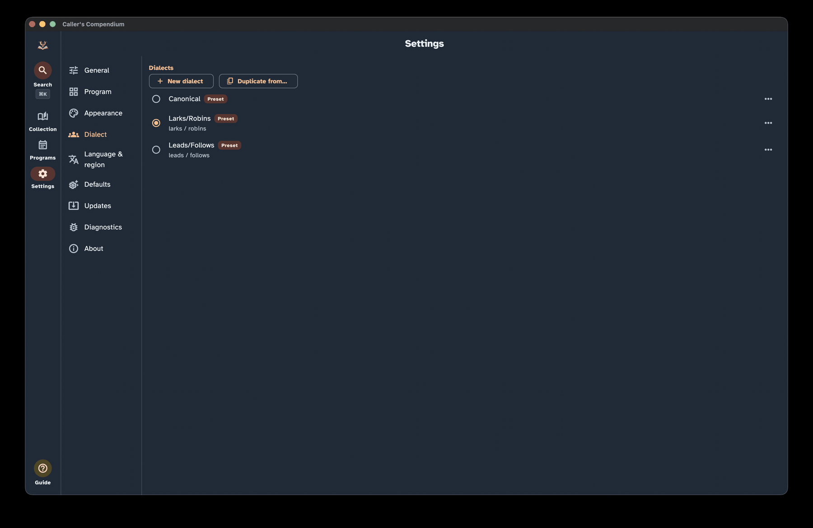

Settings
Settings is where you tune Caller's Compendium to fit the way you work — how your library sorts, how dances look on stage, which dialect names appear, and how the app protects your data. Most of what you'll find here has a dedicated guide of its own, so think of this page as a tour: it shows you where each control lives and points you to the details.
Finding your way around these words. On-screen buttons and screens are written in bold — like Settings, Appearance, and Defaults. The first time a dance term appears it links to the Glossary, so you can get a plain-language definition without losing your place.
The Settings Dialect section with the section list beside controls for the active dialect and custom wording.

Finding Settings
Settings is a top-level destination, marked with a gear icon and labelled Settings. On a narrow screen (like a phone) it's a tab in the bottom navigation; on a wide screen (a tablet or desktop) it's in the side navigation rail.
Inside, a list of sections sits beside the controls for the section you've chosen. On a narrow screen you pick a section and it opens as its own page, then you step back to switch sections. There are ten sections, always in this order:
- General
- Program
- Appearance
- Dialect
- Language & region
- Defaults
- Updates
- Diagnostics
- Experimental
- About
General
The General section gathers everyday behavior into small groups.
Library
- Ignore leading articles when sorting (on by default) — alphabetizes titles by their first meaningful word. With this on, "The Nice Combination" files under N, not T.
Accessibility
- Reduce motion — trims animations and movement. Follows your device's system Reduce Motion setting by default; flip this switch to override it either way.
- Always show verbose figure text — shows the full spoken-style figure wording on screen in the dance view, not only to screen readers. Turn it off for the terse notation. This affects the dance view; Perform mode has its own text-size controls.
- Show turns as decimals — shows turn and rotation amounts as decimals (0.75) instead of fractions (¾). Screen-reader wording is unaffected.
- Confirm before delete — adds a prompt before you delete a dance or program. Deletes are still undoable either way.
These are the highlights; the Accessibility guide gives you the full picture.
Deleted items
- Keep deleted dances for — choose 30 days, 90 days, or Never (default is 30 days). Deleted dances are held for this long and then purged. For how soft-delete and restore work, see Collection & search.
Import
- Import dances — the entry point for bringing dances in from other sources. See Imports & migration.
- Published collections — browse signed collections from the trusted catalog and send one through the review flow. See Imports & migration.
- Re-check custom figures — re-reads imported dances whose figures were kept as plain custom text only because the app couldn't recognise them at the time. You preview and confirm before anything changes, and your tags, ratings, and notes are preserved. See Write & edit dances.
Backup & restore
- Export a backup and Restore from a backup — save a copy of everything or bring a copy back.
- Backup reminder — set to Off, Weekly, or Monthly, with a "last backup" date so you know where you stand.
For the whole workflow, see Backup & portability.
Program
The Program section gathers the settings that shape how you build, check, and perform your programs — venues, the programming matrix, Perform mode, and calling history.
Venues
- Use reusable venue records (off by default) — turns a program's venue into a reusable record with address, contacts, and schedule that many programs can share and you edit in one place. When off, a program's venue is a simple free-text field. Switching is lossless and reversible: your typed venue text and any linked record are both kept, so flipping the toggle never discards either.
- Manage venues — browse, edit, and delete your saved venue records. You can also add a venue on the fly while editing a program (when reusable venue records are on). Deleting a venue is permanent — unlike a deleted dance, it isn't held for later restore. To keep you from stranding a program, a venue can't be deleted while any program is still linked to it; change or remove the venue on those programs first, then delete it.
Whether the toggle is on or off, a program that's linked to a saved venue always shows and exports that venue's full details (the linked record wins over free text). See Programs for how the venue field behaves in each mode, and Share, print & export for how venue contact details are handled when you export.
Programs
Flag exact beat overlap only (on by default) — controls how the programming matrix's alert marker decides that a move repeating in two back-to-back dances is worth a second look. On (the default), only a move whose beats actually overlap between the two dances is flagged. Off, any move that merely lands in the same named phrase (A1, A2, B1, B2…) is flagged, even if its beats don't overlap at all. The screen legend and the printed PDF legend always agree with whichever mode is on.
Auto-save program changes (off by default) — when on, valid changes are saved as you work, so leaving the program editor never asks whether to discard them. Leave it off to save programs yourself.
Matrix columns — opens a dedicated editor for the columns of the programming matrix. These changes are saved and apply to every program, both on screen and in the printed PDF — distinct from the per-session eye icon in a matrix's own header, which only hides a column until you reopen that program. In the editor you can:
- Reorder columns by dragging the handle on the left of each row.
- Rename a column with a name that suits your callers; leave the field empty to fall back to the built-in name (shown as a hint).
- Remove a column you never use, or restore one you removed earlier — removed columns stay listed here (struck through) so you can always bring them back.
- Restore removed columns brings back everything you removed and returns the built-in columns to their original order, while keeping your renames and any custom columns.
- Restore all defaults clears every customisation and returns the matrix to how it ships. Because it discards your renames and custom columns, it asks you to confirm first.
Performance
- Auto-size Perform cards (on) — scales each card so it fits the screen in Perform mode. Turn it off when you'd rather size the text yourself using the A− and A+ buttons while performing. See Perform mode for more.
- Show timer for individual Perform (on) — shows an elapsed timer and pause/resume control while performing a single dance. Turn it off when you want individual Perform to stay timer-free.
- Show caller notes in program Perform (on) — shows each non-empty per-slot caller note above the dance title while performing a program. Turn it off when you want the program card to show only the dance's own details.
Calling history
- Require "mark performed" for calling history (off) — when on, a dance's calling history lists only the programs whose slot was actually marked performed, rather than every program the dance appears in.
- Track calling history for all callers (off) — when off and you've set a default caller for new programs, a dance's calling history and "called ×N" counts include only programs led by that caller (plus any programs with no caller recorded, which are treated as your own). Turn it on — or leave the default caller blank — to track every program that contains the dance. Matching ignores surrounding spaces and letter case, and applies on top of the Require "mark performed" setting (both must pass).
- Repeated venues in calling history (3) — shows the top venues where a dance was called more than once. Set this to 0 to hide the summary, or choose up to 10 venues.
Appearance
The Appearance section controls how the app looks.
Theme
A gallery of built-in themes: System (follows your device), Light, Dark, and a set of named color palettes, including high-contrast and editor-inspired schemes. Selecting a theme previews and applies it right away. There's a High Contrast theme for maximum legibility — see the Accessibility guide for when it helps.
Custom themes
- New custom theme — opens an editor seeded from your current theme, so you start from something familiar. You can tune any colour in it.
- Saved custom themes can be selected, edited, duplicated, or deleted at any time. They are saved on this device.
Easter eggs
- Colour-named dances tint the theme (off by default) — a playful surprise: open a dance whose title names a colour, like Baby Rose or Blue Boy, and its view is tinted that colour. It steps aside when a high-contrast theme is active, so readability always wins.
Set lists
- Colour-code set-list rows — tints each dance row in a program's set list (both the read-only summary and the builder) by its formation family — contras, triplets, mixers, circles, and squares each get their own accent, so you can read the shape of a program at a glance. Dances marked as mixers always get the mixer accent regardless of their formation, so a mixer-flagged Improper reads as a mixer rather than a contra. The formation (and "Mixer" when applicable) is always shown as text on the row too, so rows stay fully readable without relying on colour, and the accents adapt to the High Contrast theme. On by default; turn it off to hide the tints.
Formation colours
- Formation label colours — highlight individual formations in your own colours (for example Becket clockwise in yellow and Becket counter-clockwise in pink). Your choices show on dance cards, in dance detail, and in the Perform header.
Tag colours
- Tag colours — give a tag its own colour so it stands out wherever it appears, on dance cards and in dance detail. Only the tags you colour change; every other tag looks exactly as it does now. The tag's name is always shown beside the colour, so tags stay readable without relying on colour, and the app picks a black or white label automatically so your colour stays legible in every theme.
Dialect
The Dialect section is your library of dialects — the role names and wording the app uses when it describes dances.
- New dialect starts a dialect of your own, and Duplicate from… copies an existing one as a starting point.
- Preset dialects are read-only, but you can Duplicate to customize to make your own version.
- Custom dialects can be edited (Edit terms), renamed, or deleted.
- One dialect is active at a time; select a dialect in the list to make it active.
Dance details & shorthands
- Canonical figure text (off by default) — allow dance details to show canonical role and move names. When it is off, dance details open in your active dialect and do not show the in-detail Canonical switch.
- Auto-convert all discouraged terms (on by default) — show supported discouraged terms in canonical wording across read-only dance details, shorthands, notes, Perform mode, and exports. Saved text and entry fields are unchanged.
- Open dance details in canonical terms — when this and Canonical figure text are both on, dance details open in canonical wording. While Canonical figure text is off, this preference is kept but has no effect.
- Free-text entry — when on, adding a figure lets you type a whole line (for example "neighbor balance & swing") instead of building it field by field.
- Figure shorthands — map short tokens to one or more figures you can insert during free-text entry. See Figure shorthands.
- Walkthrough snippets — manage your personal, per-figure walkthrough wording. These settings are independent of canonical figure text.
This is the entry point — see Dialect for the full story on choosing and customizing wording.
Language & region
The Language & region section handles formats and localization.
Formats
Date format — choose System default, Year-month-day, Day/month/year, Month/day/year, or Custom…. A live example shows the result, and your choice controls how program event dates appear.
A custom pattern is built from these tokens:
Token Meaning yyyyoryyYear MMMonth as digits MMMMonth as a short name MMMMMonth as a full name dorddDay Separate them with a hyphen, slash, dot, comma, or space. If a pattern isn't recognised the app says so and falls back to the system default until you correct it.
First day of week — choose System default, Sunday, Monday, or Saturday. This sets which day starts the week in the date views the app draws for itself — today that is the "this week" strip at the top of the Programs list, which reorders the moment you change the setting. Date entry still uses the system picker, which follows the app's active language.
Language
- App language — choose System default or one of the bundled languages (currently English, German, French, Japanese, Danish, and Dutch). Changing it re-renders the app immediately and is remembered next time you open the app. With System default, the app follows your device's language when it is one of those bundled languages and otherwise uses English. Your dance content — figure and call wording — is governed by your chosen dialect, independent of the interface language.
Defaults
The Defaults section sets starting points: how lists open, what dance rows show, and what new programs and dances begin with. Every default here can still be changed on each item later — they save you repetitive setup.
Display defaults
- Collection sort order and Programs sort order — the order your library and your Programs list use when you open them. Choose a fixed order, or Last used to pick up wherever you left off. You can still change the sort while browsing.
Collection card fields
Choose which details appear on each dance row in your collection: Authors, Times called, Formation, Status, Level, Rating, Tags, and Custom fields. All of them are shown by default.
Collection filters
Choose which filters appear in the Filters panel on the Collection screen and when you pick dances for a program. Every filter is shown until you untick it, and each of your searchable custom fields has its own checkbox. Hiding a filter only removes it from the panel: it does not delete anything, and the Advanced search can still use the same properties. If you hide a filter that is currently narrowing the list, its selection is cleared. A filter that is narrowing the list when you open a dance's tag from its detail page stays visible until you clear it.
Program defaults
Select Program defaults to open this group.
- Default caller and Default band — prefilled into each new program, and editable per program.
- Starting program — an ordered template of dances, caller notes, breaks, and free-text entries for programs you create by hand. Dances that are no longer in your collection are skipped. It applies only when you create a program in the editor; imports, duplicates, and “create with this dance” keep their own slots.
Import defaults
Select Import defaults to open this group.
- Tags for imported dances — tick the tags you want added to each new dance you import on its own: from the import screen (including a pasted list of titles), from an online search, or from a shared dance link. It applies only to dances the import creates. A dance an import updates in place, a dance created for a program slot while importing a program, and dances restored from a Compendium archive keep whatever tags they already have. A program in a Caller's Companion file or a published collection is still imported, but only its dances receive the tags. You can choose up to 50 tags. The choice is remembered by tag name, so it survives a sync or a merge restore. If you later delete one of the tags, imports simply skip it. Dances you create in the editor are not tagged either. Choosing tags here does not change dances already in your collection, and Undo on an import removes the dances it created along with their tags (the tags themselves stay).
Dance-authoring defaults
These help if you write your own dances. Select Dance-authoring defaults to open this group. You can override any of them per dance, and Write & edit dances covers them in context.
- Level — open this to manage the difficulty levels used by dance editors, collection filters, and batch actions. Add a level, rename it, or drag it into a different position; renaming keeps existing dances attached to that level. A level can't be removed while any dance uses it — including a dance waiting in Recently deleted. Once no dance uses it, you can remove any level, including the ones that ship with the app.
- Type, Formation, and Progression — the starting choices for a new dance.
- Default phrase structure — leave blank for the standard 4×16 A1 A2 B1 B2, or set your own.
- Starting figures — the figures a new dance begins with; defaults to a single stand still of eight beats. Clear it for a blank new dance.
- Meanwhile defaults — the ordinary side figures used when you choose Add meanwhile while authoring a dance. Leave this list empty to start with two blank sides, or configure up to six ordinary sides. If only one side is configured, the app adds a blank second side so the container can be completed. Invalid or unavailable saved defaults use two stand-still sides.
- Modifier defaults — the core and modifier figures used when you choose Add modifier while authoring a dance. Leave this list empty to start with two blank figures, or configure up to six figures. If only one figure is configured, the app adds a blank second one. Invalid or unavailable saved defaults use two stand-still figures.
- Move defaults — preferred parameter values applied automatically when you insert a move while writing. These override that move's built-in defaults, and you can still change any parameter afterwards.
- Aggressively recompute figure beats (off by default) — when on, changing a figure's move or a parameter that affects timing recalculates its beat count immediately, even overwriting a beat count you typed in by hand. When off, a beat count you've edited is never changed automatically.
Updates
The Updates section lets the app tell you when a newer version is out — and, on desktop, help you install it. Nothing here happens behind your back: the app never updates itself automatically, and no update is ever downloaded or installed without you choosing to.
- Check for updates — check right now, any time. It shows the version you're on and whether a newer one is available. If it can't reach the update service it reports that no update was found, so a check never interrupts you with an error.
- Beta channel (off by default) — turn this on to be offered pre-release beta versions. Left off, you're only offered stable releases. While Caller's Compendium is in beta, every release is a beta release, so turn this on if you want the app to tell you about new versions.
- Check automatically (off by default) — when on, the app quietly checks for a newer version as it starts up. Left off, checking only happens when you ask.
When an update is available, a dismissible banner points you to the release so you can read what's new before deciding.
On desktop, once an update is found you can Download & install update: the app downloads it, verifies it hasn't been tampered with, then hands it to your system's installer to finish — it never replaces itself in place. On macOS, you first choose where to save the disk image. After it is verified, choose Update now to open the image and close the app; you can then replace the app in Applications. Choose Not now to keep working and use Update and restart from the banner or Updates section later. On Windows, clicking Download & install update authorizes the verified installer to run; it handles closing and replacing the existing installation. On Linux, the verified download is shown in your file manager for you to run yourself; the app never runs it for you. On phones and tablets, the banner's link takes you to the release to download it the usual way for your platform.
Your privacy is built in: an update check downloads a small version file over a secure connection and nothing else. No information about you, your device, or how you use the app is ever sent.
Diagnostics
When something goes wrong, the app writes a short technical note to a log on your own device — not just outright crashes, but also errors you see reported on screen (like a failed import). It is never sent anywhere — there is no telemetry. The Diagnostics section is where you read that log, hand a copy to a bug report, or wipe it.
Recent entries
A list of the most recent entries, newest first, so you can see whether anything was captured around the time the trouble happened. If nothing has ever gone wrong you'll see No errors recorded. If the log can't be read, the app says so and still lets you try to export or clear it.
Export
- Include full detail (may contain your content) — off by default. Left off, the export removes the text of error messages, your content, file paths, email addresses, and phone numbers. Turn it on only when you mean to share the full, unredacted log.
- Export / share log — hands the log to your system's share or save dialog. The row tells you which kind you're about to send: a scrubbed copy safe to attach to a bug report, or the full unredacted log. If the app can't prepare a safe scrubbed copy it saves nothing and tells you, rather than sending more than you asked for.
If there is nothing in the log, the app says No diagnostics to export instead of producing an empty file.
Clear log
- Clear log — deletes the local crash log from this device. The app asks first and is blunt about it: this cannot be undone.
Filing a bug? A scrubbed log attached to a GitHub issue is the most useful thing you can send.
Experimental
The Experimental section holds features that are still in development — today, that's Device Sync. Anything here can change before it becomes a regular setting. Each feature sits in its own section: select its heading to open or close it.
Device Sync
Device Sync keeps your library in step across your own devices. It is off until you turn it on with Turn on Device Sync, and while it is off the app sends nothing anywhere. Turning it on does not send anything by itself; nothing is exchanged until you connect a store. The section starts closed while Device Sync is off and open while it is on.
- Sync only on WiFi is on by default. On a mobile-data connection automatic sync waits, and pressing Sync now tells you why. In this section it points at this setting; from the sync icon on Collection or Programs it tells you to turn the setting off here in Settings. A pass that was skipped runs the next time sync is triggered; you do not need to do anything.
- Skip unused imported dances is off by default. If you have a large imported collection, turning it on cuts what this device uploads — but a dance that's actually used in one of your programs, or linked from another dance, is always included, so nothing that's still in use loses anything. Turning it on removes nothing already on your other devices; this device stops advertising the rest. Turning it back off republishes them.
- Status opens with Your sync phrase — the phrase this device is connected with — so you can add another device later even if you didn't write it down when you first connected. It stays hidden behind bullets until you choose the eye button, and Copy puts it on the clipboard without showing it, which is all you need to type or paste it into the other device. Keep it to yourself: the phrase is where your shared library lives, so anyone who has it can open that library — read everything you sync, change or delete any of it on every connected device, and delete the whole store from the server. Changing the phrase means moving every device to a new one.
- Status names the server this device is syncing with, written out in full as an address. That's the Caller's Compendium server unless you set your own when you connected; a server that isn't the default one is flagged, because whoever runs it can read and change everything you sync.
- Status also tells you when a first connection merged duplicate dances — "Found and merged 3 duplicate dances", say. Connecting a device that already holds some of the same dances joins them up silently, and this is what tells you it happened. It shows after any first connection to a store: when you pair, when you reconnect a store that went missing, and when this device rejoins a store that was replaced. It stays put for the rest of the time the app is open, rather than flashing past while you're not looking, but it is not kept once you close the app — so if the number matters to you, write it down. The dances are already merged either way; the count is a report, not something waiting to be dealt with.
- Status also shows when this device last synced. Sync is not a backup: a store that goes unused for 30 days is removed, so keep making file backups. From three weeks of disuse the status also warns that the store is close to expiring.
- When a sync fails, the status says why, not just that it failed: the sync server couldn't be reached or took too long, the server had a problem of its own or asked this device to slow down, your store is out of space, something was too large to upload, the server refused what was sent or didn't accept the sync phrase, it sent a reply the app couldn't use, another device's latest list couldn't be read during a first connection, or something went wrong inside the app. Each comes with what you can do about it, and — where it's known — a Details line naming the step that stopped and the HTTP status the server answered with. If the problem isn't yours to fix, quote that line to whoever runs the server. The Sync now button on the Collection and Programs pages reports a failed sync the same way, so you don't need to come here to find out.
- Notices appear under that last-synced line when a sync had something to report. A sync can finish successfully and still leave one of these standing, which is the point of them: the conditions they name are ones the app will not guess its way out of. You'll see a notice when the same record was changed on two devices in the same moment and isn't something you can pick a version of here (if it's listed under Sync decisions, choose there; otherwise edit either one to settle it); when something created here was kept rather than removed by a device that had never seen it; when something on this device has a date the app can't trust, so it isn't being sent anywhere (check this device's clock); when some dances here have saved figures or tunes the app can't read, so they aren't being sent (nothing is deleted — enter those figures or tunes again to send them); when records from another device couldn't be used and were skipped; when another device's clock looks far off; when an update arrived while you were editing the same record, so it waits for the next sync; and when another device is syncing but isn't taking changes from this one. Each notice lists the records it is about, the first few individually and the rest as a count, so you know which ones to look at. Dances, programs, choreographers, tags and venues are named by the title or name this device has for them, and one this device doesn't have is listed as not on this device; other kinds of record — settings, custom fields, difficulty levels, published sources — are listed by kind only. A notice about records from other devices also says how many devices they came from. A notice is only ever a message — it never blocks an edit, never holds up a sync, and there is nothing to dismiss. It stays until a sync no longer finds the condition, then goes away on its own. One kind is deliberately stickier: a record refused from another device is only mentioned once per run of the app, so its notice stays for the rest of that run rather than disappearing at the next sync and leaving you with nothing. Notices are not kept when you close the app; anything still true is reported again by the next sync.
- "Needs you" marks the one notice that asks you to do something: a device that is syncing — it has shared its own changes at least twice since this device shared some — but still hasn't taken them. It names that device by its tag from Other devices, says how many changes it isn't taking, and has a button to open that list. Your changes are safe on this device either way. The usual causes are that the other device needs an app update, or that this device's date and time are wrong, so the other device refuses its changes as coming from the future. A device that simply hasn't been opened since doesn't raise this notice: it just shows changes waiting for it under Other devices. Like every notice, it never blocks anything and goes away on its own once the other device catches up.
- These settings belong to this device. They are not synced to your other devices, and they are not included in a backup, so restoring a backup never turns sync on.
Connecting. Once Device Sync is on, choose Connect, then either:
- Create a new store — you get a phrase to read aloud or share with your other device. You can replace it with one of your own: four words separated by hyphens. If you type your own, the screen asks you to keep personal information out of it — no names, addresses or birthdays — because the phrase goes to the server with every request and gets read out or typed on each device you connect. If your phrase also looks easy to guess, the screen says so. Neither warning stops you using it.
- Connect to an existing store — enter the phrase shown on the device you already set up.
The screen tells you which you're doing; it never guesses.
The Server field is pre-filled with the Caller's Compendium sync server, https://athenaeum.callerscompendium.com/; leave it alone unless you run your own. If you change it, the screen warns you that whoever runs that server can read, change, and delete everything you sync. Whichever server you end up on, the status shows its address once you're connected. The address must start with https:// (plain http:// is accepted only for localhost or 127.0.0.1, for testing a server on the same machine).
Along the way the screen explains three things worth knowing before you commit to sharing a phrase. A second device using the same phrase can edit the same records, and if both of you touch the same dance or program at once, one edit silently wins — there is no merge and no warning. The phrase is where your shared library lives rather than a password in front of it — there's nothing to sign in to — so anyone you give it to, and anyone who simply comes by it, can open that library: read everything you sync, change or delete any of it on every device you've connected, and delete the whole store off the server. There is no version of a phrase that does less. And nothing anywhere else records it: lose it and the library stays where it is with no way back to it, and telling someone the phrase can't be untold. Moving every device to a new phrase just starts a second library elsewhere; the first one is still there for anyone who kept the old phrase — see Deleting the store below.
Before connecting, you're offered an optional one-time backup of your library — accepting or skipping it doesn't change what connecting does.
When connecting finishes, the app says so and tells you what actually happened to the first sync: that it has finished, that it didn't finish and will try again (with the reason, as on the status), or that it's waiting — for WiFi if Sync only on WiFi is on and you're on mobile data, or for a connection if you're offline. It never claims a sync is running while you read it. It repeats there that sync is not a backup, and reports any duplicate dances the first connection merged.
Disconnecting. To stop syncing on this device without turning Device Sync off, choose Disconnect this device and confirm. The device forgets its phrase and the server it was using, and stops syncing: your library here stays as it is, and your other devices carry on syncing with everything they have. Disconnecting removes this device from the sync store if your other devices already have everything from it. If they don't, it stays listed under Other devices until you remove it there. That removal is one quick try made just after the phrase is forgotten, and only on a connection that Sync only on WiFi would allow; it never holds up disconnecting, and if it can't be made it isn't tried again. To reconnect — to the same store or a different one — choose Connect again; you'll need the phrase, so keep it somewhere safe, along with the server address if you changed it. Each time this device connects, it makes up a new identifier for itself rather than reusing the one from its last connection, so if an entry from an earlier connection was left under Other devices, it stays there until you remove it. Disconnecting really does forget the phrase, so copy it from Your sync phrase first if it isn't written down anywhere else. Turning Device Sync off and on again, by contrast, keeps this device connected.
Your other devices. Other devices lists everything else connected to this store, and lets you remove one you no longer use — a phone you've replaced, or one that's been lost. Removing a device frees the place it was taking up straight away; a store holds 32 devices, so a run of replaced phones can eventually leave no room for a new one. The store also drops that device's list of what it shared, though the shared items themselves are cleared up later, in the server's own time, so the space they use doesn't come back immediately. Nothing is deleted from the removed device, and nothing is deleted from yours.
Removing is for a device that's genuinely gone. It doesn't disconnect anything and it isn't a ban: a device that's still running will publish its list again the next time it syncs and reappear in this list, and any device can connect to this store again with the phrase. To stop a device syncing you have to disconnect it on that device.
Each device makes up its own random identifier, and a new one every time it connects, so the list shows each device as a short tag from that identifier — "Device 7c02Lm", say — never a name. This device isn't in the list, but its own tag is shown above it ("This device: k7mQ2x"), so you can look it up in the list on your other devices. Under each device you'll see when it last shared changes — today, a number of days ago, or roughly how many weeks — rounded to the day, never a time; and, if some changes from this device haven't reached it yet, how many are waiting for it. Those lines come from this device's last sync, so a device that sync couldn't see, or one that connected since, shows its tag only until the next one.
A device that disconnected and connected again can appear twice: once for its earlier connection, which no longer changes and so never shares anything new, and once for its current one. If you can't tell which is which, it's safe to leave them, but an extra entry isn't free. It takes one of the 32 places, and the store keeps the items it shared until it's removed. Because it still has everything this device had shared before it disconnected, its "waiting" line counts only what changed since. Removing an entry you know is an old connection avoids all of that.
Deleting the store. Disconnect all devices and delete the store removes everything the store holds from the server, for every device at once, and it can't be undone. Your library stays on this device and on each of your other devices, but anything that had only ever reached another device through syncing won't arrive here. This device disconnects and forgets its phrase; your other devices find the store gone the next time they sync and are asked whether to start a new one, the same question as any store that's no longer there.
This is what to use if someone else has seen your sync phrase. A leaked phrase can't be revoked, and moving your devices to a new phrase doesn't help on its own — whoever has the old one can still read and change everything in the old store. Deleting the store is the only thing that takes that away immediately. It is not the answer to running out of room, though: remove a device you don't use instead.
If a store this device used to sync with is no longer there, the app asks before creating a replacement: it may have gone unused past its 30-day limit, or it may have been removed — the app can't tell which. Reconnecting re-sends your whole library, so it follows Sync only on WiFi like everything else: on mobile data with that setting on, nothing is sent and the app points you at the setting, with the question still waiting once you're back on WiFi. If a reconnection doesn't go through, the question comes back and says so, and you can try again or leave it. Declining makes no network request and leaves the choice for later. Sync then pauses: the status says so and keeps saying so, and automatic syncs stop running rather than asking again every time. Nothing is lost while it is paused. When you want to decide, choose Sync now in this section — that reopens the same question, and the paused line goes once a sync completes.
Venues sync partially. A venue's name, website, schedule, and notes sync like everything else, but its address and both contact blocks stay on each device — there's no channel for them to travel through. While Device Sync is on, the venue editor shows a note on a venue whose address and contact fields are blank, naming exactly those fields. (Notes does sync — if you've put contact information there, it travels with the note.)
Choosing which version to keep
Sometimes the same item is changed on two of your devices before they've synced — the same setting changed in the same second, say, or your dialects edited on both a laptop and a phone. The app can't tell which change you meant to keep, so it doesn't pick one: both versions stay as they are, and it asks you.
- On the Collection and Programs pages, the Sync now button shows a number badge while anything is waiting for your choice. When a sync you started finds something new to choose, the choice opens straight away.
- In Device Sync, Choose which version to keep lists everything that's waiting.
For each item you see This device and Another device, with a short description of each version — the value of a setting, the names in a list, or how many details differ. Nothing is selected for you. Pick the version you want for each item, then choose Keep selected; with several items, Keep all from this device or Keep all from the other device fills in every choice at once, and you still confirm. Decide later closes the list and changes nothing.
The version you keep becomes the newest edit, so your other devices take it the next time they sync and stop asking. If you choose on two devices before either has synced, the later choice wins — unless you made different choices in the same second, in which case you're asked again.
Your dialects, custom themes, figure shorthands and walkthrough snippets are each one whole set, so if both devices changed them you choose one device's set — the app can't combine the two.
Sync decisions
Sync decisions, under Device Sync while a store is connected — review conflicts that Device Sync couldn't settle on its own, and choose how each one is resolved. Three kinds of conflict offer a decision:
A device deleted something another device still has. One of your devices deleted a choreographer, tag, custom field, or difficulty level that this device had already created on its own under the same name, before either device had seen the other's copy. Merge accepts the deletion, so this device's copy goes too. Keep both gives this device's record a new, distinct name so it survives alongside the deletion. Dances never enter this decision; they use the dance one below.
Another device renamed a record onto a name this device already uses. Both records already exist here — they may well be two different people or two different tags — so nothing is merged behind your back. Merge keeps one record and points everything that referred to the other at it. Keep both asks you for a new name for the record that currently holds the name, and then applies the other device's rename. Until you choose, the other device's change is not applied.
Merging two choreographers is the one case that loses something: an email address, location, and deceased marker are kept only on your own device and are never sent to your other devices, so the ones on the record that is not kept cannot be recovered. The app asks you to confirm before this happens.
Two devices independently created dances with the same title but different choreography. This turns up when a device first connects to a store that already has dances in it. Merge combines the two dances into one. Keep both renames one of the dances so both are kept separately. Any other kind of conflict is listed and kept as it is, with no action to choose. When the same item was simply changed differently on two devices, you choose between the versions instead — see Choosing which version to keep.
About
The About section tells you what you're running and where it comes from.
- App name, Version, and the app's tagline.
- A User guide link that opens the built-in offline guides — the same pages you're reading now.
- License info: the app is free software under AGPL-3.0, with View source on GitHub.
- Bundled-font credits — Fraunces, Atkinson Hyperlegible, and Roboto, under the SIL Open Font License.
- Theme-palette and dance-data attributions, including The Caller's Box (CC BY-NC).
- View licenses — the full license texts, including the bundled fonts,
fmptools(MIT), the project the Caller's Companion importer is ported from, the EFF long wordlist (CC BY 3.0 US) that generated sync IDs are drawn from, and ContraDB (AGPL-3.0), whose figure wording the dance-text renderer follows.
Where to go next
- Dialect — customize the role names and wording your dances use.
- Backup & portability — export, restore, and set backup reminders.
- Imports & migration — bring dances in from other sources.
- Accessibility — reduce motion, verbose figure text, high-contrast themes, and more.
- Write & edit dances — authoring defaults, shorthands, and walkthrough snippets in context.
- Collection & search — custom fields and restoring deleted dances.